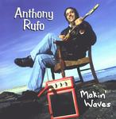

| Artist: | Anthony Rufo |
| Title: | Makin' Waves |
| Label: | self produced |
| Length(s): | 45 minutes |
| Year(s) of release: | 1999 |
| Month of review: | [05/2002] |
| 1) | Tonester Bushido | 4.08 |
| 2) | Imagination | 7.50 |
| 3) | Sanctifying Grace | 7.20 |
| 4) | Soul Searching | 2.36 |
| 5) | Father | 5.15 |
| 6) | Bodhi Blues | 3.43 |
| 7) | Cruisin' | 4.46 |
| 8) | Kathryn | 9.37 |
Sanctifying Grace is a rather proggy track with a repetitive intro and then some strumming acoustics again. I was reminded both of flamenco and Alice Cooper's Halo Of Flies here. In the continuation the sound gets more open and wide, a bit easy-going perhaps, but still having that Spanish tinge. All in all, a very good instrumental: lots of melody and compelling. Soul Searching is short plinkety-plonk acoustic track. Nice, but no more.
The acoustic guitar again reigns on Father, moody and jazzy with the rocking parts a bit bouncy. These parts are alternated. Not so great this one. Bodhi Blues is a bit too slick for my tastes. The organ does add a bit of swing to the music and a bit of energy as well and the middle part is more varied, but the remainder is too uneventful.
On Cruisin' the blues takes reign with a squealing, wailing guitar. Then the music becomes sluggish. There's something very familiar to this song, I think it is Bring It On Home To Me/If You Ever Change Yuor Mind/You're Gonnna Leave Me Leave Me All Behind, but the title escapes me. Rolling Stones?
The conclusion is the longish Kathryn, probably for the Kathryn thanked in the booklet. After a romantic beginning on piano we get some birds and sea sounds. Then a friendly acoustic guitar sets in, playing a beautiful melody and the keys carefully add theirs. Very thematic and careful and I like it.